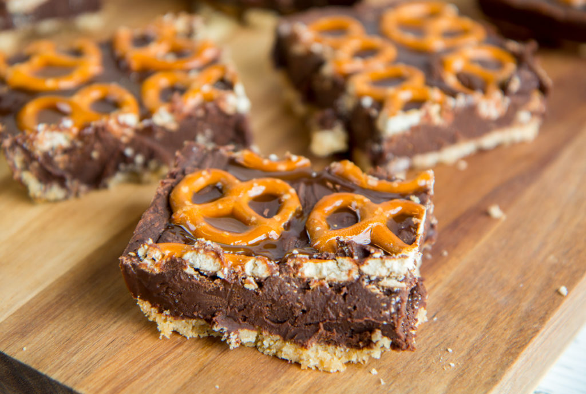
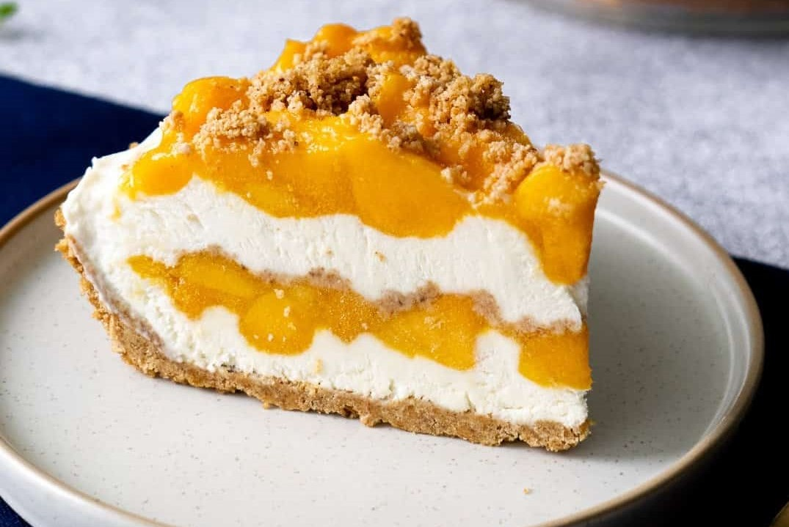
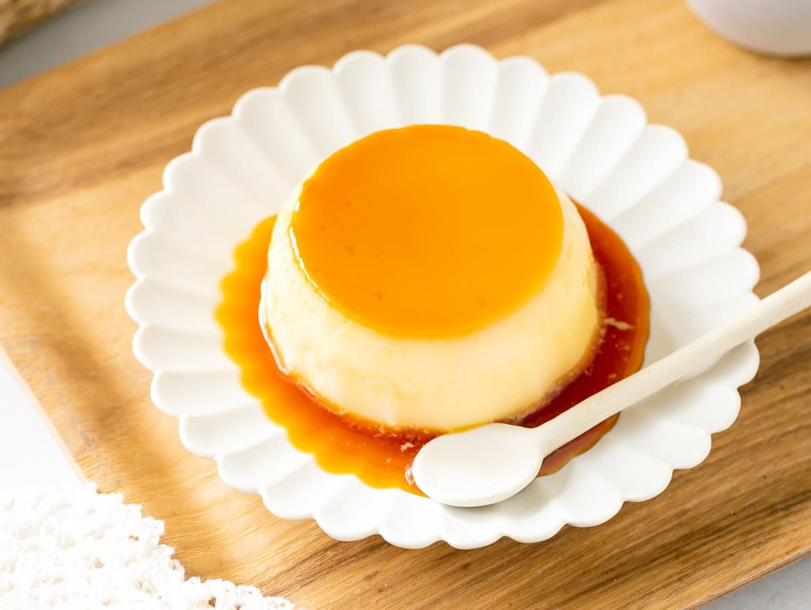

Cheesecake is at the top of "many people's favorite desserts list. What's not to love about
this creamy, decadent dessert with a sugar-crumb crust? One of the best things about cheesecake
is how versatile it is; from fruit-filled to chocolate-coated, there are infinite variations!

Ingredients
Heavy whipping cream
Confectioners' sugar
Vanilla extract
Chocolate wafers
Chocolate curls
Directions
Make the sweetened whipped cream
Assemble the cake
Frost and decorate
2. Filipino Mango Royale
If you love mangoes, and you love mango desserts, Mango Royale, aka Mango Float, is an absolute must-try;
right after mango and sticky rice, of course!
It's a frozen Filipino dessert that takes advantage of peak-of-the-season mangoes, and uses only 5 ingredients.
There's no baking involved

Ingredients
Manila mangoes
Heavy whipping cream
Sweetened condensed milk
Butter
Lime juice
Directions
Melt and brown the butter until very dark and nutty
Pour into the graham cracker crumbs and mix
Score mango cheeks into cubes and scoop into a bowl.
Combine the condensed milk and whipping cream.
Whip on medium to medium-low speed until firm.
3. Japanese Pudding
Topped with a deliciously bittersweet caramel sauce, Purin (Japanese Custard Pudding)
is a popular homemade dessert.
This recipe is Japan's take on crème caramel also called flan or caramel pudding.
Follow my tips for a foolproof caramel and a silky smooth custard.

Ingredients
Eggs
Granulated sugar
Whole milk
Vanilla
Caramel sauce
Directions
Make the caramel sauce with sugar and water and divide the mixture into molds.
When the milk mixture is hot, right before simmering, pour it into the egg mixture and whisk it all together.
Bake in the oven until firm, about 30-45 minutes, depending on the mold size.